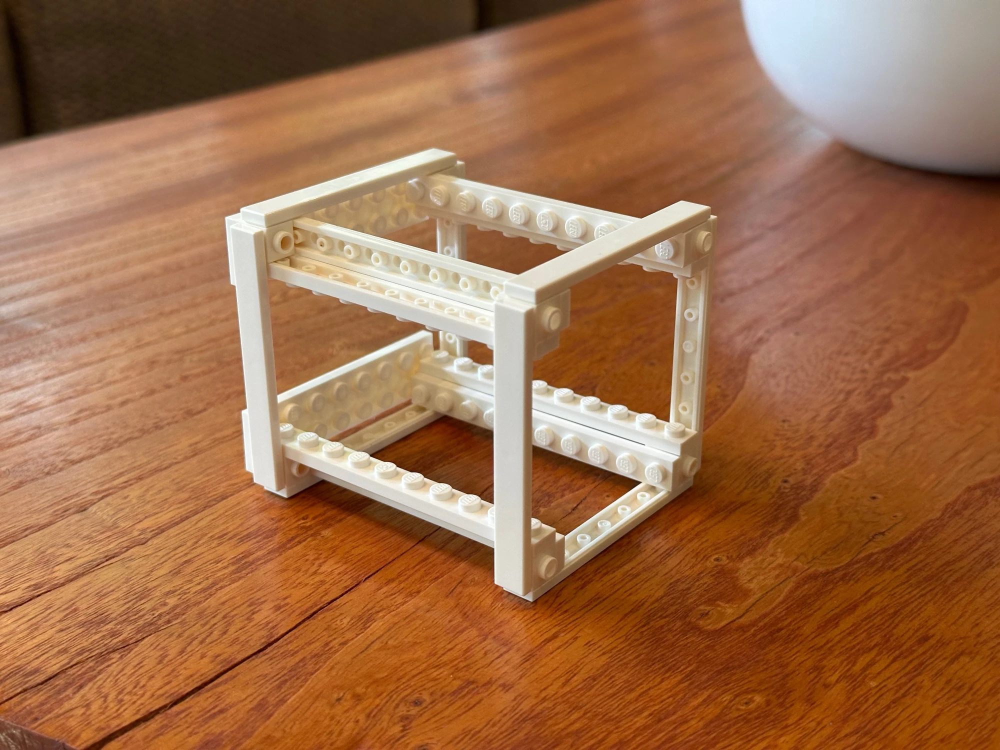
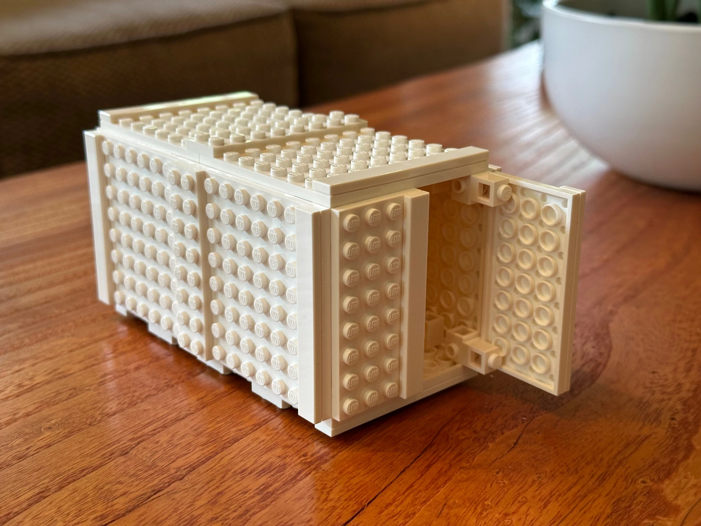
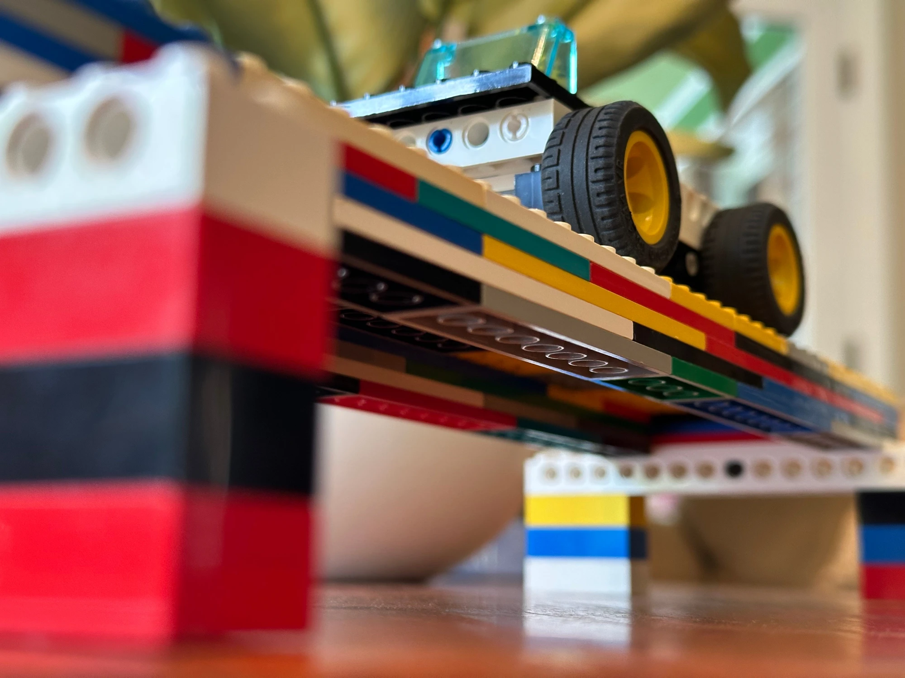

Tacoma Narrows Bridge
A steady wind and a bridge that tore itself apart.
Read case study →Guiding questionHow are structures present in everyday products?
Everything holds still until it doesn't. A structure is any object that carries a load without collapsing, which covers the chair you are sitting on, the building around it, and the bones doing the sitting. This is where design stops being about how something looks and starts being about whether it survives.
Structural thinking earns its place at HL because it makes you accountable. Once you can identify tension, compression, shear and torsion in an object, you can no longer describe a design as "sturdy" and move on. You have to say what is carrying the load, where it will give way first, and how much margin is left before it does. That last part, the safety factor, is one of the few places in this course where the answer to "how careful should I be?" is an actual number that somebody had to argue for. Structures also reward curiosity more than most topics do. Pick up almost any object and you can work out which of these ideas its designer was relying on.
Students must be able toAnalyse and interpret a variety of human-made and natural structures.
A structure is any object or assembly that supports a load without undergoing unacceptable deformation or failure. Structures are found everywhere, from the bones of a skeleton to the steel frame of a skyscraper, from a spider's web to a suspension bridge.
In nature, evolution has optimised structures over millions of years. Examples include:
In the built environment, designers learn from nature but also from the properties of manufactured materials:
Real products and buildings combine structure types. A motor vehicle has a frame chassis, shell body panels, and solid engine block components: analysing each helps designers understand the load paths and select appropriate materials.
Students must be able toDiscuss frame, shell and solid structures, and how they are used in the design of products.
The three primary structural classifications are:
Solid structures are formed from a single, continuous mass of dense material. They resist forces primarily by sheer bulk and mass rather than by geometry. Solid structures are extremely strong in compression but tend to be heavy and material-intensive.

Frame structures consist of a skeleton of interconnected beams, rods, or struts. Strength comes from the geometry of the arrangement (especially triangles) rather than material mass. Frame structures are lightweight and efficient.

Shell structures are thin, curved surfaces that enclose a space or wrap around a form. Their curvature transfers forces across the entire surface, not through a concentrated path. This allows great strength with very little material.
Combination structures use elements of all three types. An automobile combines a space frame (chassis), shell panels (body), and solid components (engine block, axles). Analysing which part is which helps designers understand load paths and optimise material placement.
Students must be able toIdentify simply supported beams, fixed beams, cantilever beams, continuously supported beams and columns, and explain their function.
Larger structures are built from individual structural members: elements designed to carry specific types of load in specific ways. The four primary beam types and columns are:
Simply supported beam: Rests freely on supports at both ends, with no resistance to rotation at those supports. The beam can bend between the two points. This is the most common beam type and the simplest to analyse.
Fixed beam: Rigidly attached (built-in) at both ends. The supports resist not only vertical force but also rotation (bending moment). Fixed beams deflect less than simply supported beams under the same load, because the rigid ends counteract bending.
Cantilever beam: Fixed at only one end, with the other end projecting freely with no support. All the bending moment is resisted at the single fixed point. Cantilevers are efficient for overhangs but require strong, rigid fixing.
Continuously supported beam: Spans across more than two supports. The multiple supports share the load and reduce maximum bending moments, allowing longer spans. Analysis is more complex because it is statically indeterminate.
Columns are vertical structural members that carry compressive loads downward to the foundations. They are primarily loaded in compression (unlike beams, which are loaded in bending). Long slender columns are vulnerable to buckling (sudden lateral deflection under compressive load), which is why I-sections and hollow tubes are preferred over solid rods.
Students must be able toExplain how compression, tension, torsion, bending and shear forces act within a structure, and differentiate between static and dynamic forces.
Static forces are constant, non-changing loads. Also called dead loads, they include the permanent weight of the structure itself and any fixed attachments. A bridge's own weight is a static force. Static forces do not change with time and are relatively straightforward to design for.
Dynamic forces are changing or moving loads. Also called live loads, they include traffic, wind gusts, people moving, earthquakes, and machinery vibration. Dynamic forces are harder to predict precisely, which is one reason safety factors (see 3.2.9) are built into structural designs.
There are five fundamental types of force that can act within a structure:
In practice, most structural members experience combinations of these forces simultaneously. A beam under a central load experiences bending (tension + compression) and shear at the supports. A drill bit experiences both torsion (turning) and compression (pushing).
A steady wind and a bridge that tore itself apart.
Read case study →Students must be able toDescribe the relationship between stress and strain on a material under stress, and outline Young's Modulus, yield strength, ultimate strength and fracture in the context of a stress-strain graph.
When a force is applied to a material, two things happen simultaneously: the material experiences stress (internal resistance) and strain (deformation).
Stress (σ) is the force per unit cross-sectional area:
σ = F / A [units: Pa or MPa; 1 MPa = 10⁶ Pa = 1 N/mm²]
Where F is the applied force in newtons and A is the cross-sectional area in m² (or mm² for MPa).
Strain (ε) is the fractional change in length:
ε = ΔL / L₀ [dimensionless, no units]
Where ΔL is the change in length and L₀ is the original length. Strain has no units; it is often expressed as a percentage or in microstrain (με).
A stress-strain graph shows how a material responds from first loading to final fracture. Key points on the graph:
Young's Modulus (E) measures stiffness: how much a material resists elastic deformation per unit stress:
E = σ / ε [units: GPa or MPa]
A high Young's Modulus means the material is very stiff (little strain per unit stress). A low E means the material is flexible (large strain per unit stress). Note: stiffness is not the same as strength; a stiff material resists deformation, while a strong material resists fracture.
Students must be able toCompare materials with a high Young's Modulus and those with a low Young's Modulus in terms of how they react under stress, and explain why this is important when designing structures.
Young's Modulus spans many orders of magnitude across the material families. The table below shows approximate values for key engineering materials:
| Material | Young's Modulus (GPa) | Character |
|---|---|---|
| Natural rubber | 0.01–0.1 | Very flexible; large elastic deformation |
| Polymers (general) | 0.1–4 | Flexible to semi-rigid |
| Wood (along grain) | 8–16 | Stiff for its weight; anisotropic |
| Concrete | ~30 | Stiff in compression; brittle |
| Aluminium alloys | ~70 | Stiff, lightweight; good for aerospace |
| CFRP | 70–150 | High stiffness-to-weight ratio |
| Titanium alloys | 100–120 | High strength and stiffness; biocompatible |
| Steel | 190–210 | Very stiff; heavy; predictable |
| Tungsten carbide | ~600 | Extremely stiff; used in cutting tools |
| Graphene | >1000 | Highest known stiffness per unit weight |
High E materials (steel, CFRP, titanium) deform very little under load. They maintain their shape under high stress, making them ideal for structural members in buildings, bridges, and aircraft where maintaining precise geometry matters. Under the same load, a steel beam deflects far less than a timber or polymer one of the same dimensions.
Low E materials (rubber, soft plastics) undergo large elastic deformations under relatively small loads. This is not a weakness: it is useful when compliance and energy absorption are required. Vehicle tyres must flex to absorb road irregularities; rubber seals must deform to create a watertight joint; foam cushioning deflects to protect fragile contents.
Design implications:
Students must be able toDescribe when a structure is in equilibrium and identify the conditions where a structure will fail.
A structure is in static equilibrium when it is stationary and all forces and moments acting on it are balanced. Two conditions must both be satisfied:
ΣF = 0 (the sum of all forces is zero in every direction)
ΣM = 0 (the sum of all moments about any point is zero)
When ΣF = 0 but ΣM ≠ 0, the structure will rotate. When ΣF ≠ 0, the structure will accelerate. Only when both conditions hold is the structure truly stable and stationary.
Conditions that disrupt equilibrium and can cause structural failure:
Students must be able toExplain how structures can be strengthened by using struts, shape, lamination and composite materials.
Designers have four primary strategies for increasing structural strength and stiffness without simply using more material:
1. Struts and triangulation
A strut is a compression member added to a frame to stabilise it against lateral forces or to share loads between members. When struts are arranged to create triangles, the structure becomes inherently rigid: a triangle is the only polygon whose shape cannot be changed without changing the length of its sides.
2. Shape optimisation
The cross-sectional shape of a structural member dramatically affects its resistance to bending and buckling, independent of the material used:

3. Lamination
Bonding multiple layers of material together, often with the layers' grain or fibre orientation varied between plies, creates composites that outperform any single layer:
The second moment of area (also called the moment of inertia of a cross-section) is a geometric property that measures how a member's cross-sectional area is distributed relative to its bending axis. The further material sits from that axis, the more it contributes, because each small area's contribution is weighted by the square of its distance from the axis. This is why an I-beam, which concentrates material into flanges far from the centre, resists bending far better than a solid rectangular bar of the same mass.
This connects directly to the stiffness ideas introduced for Young's Modulus: bending resistance depends on both the material's Young's Modulus (a property of the material itself) and the cross-section's second moment of area (a property of its shape). Two beams made of identical steel can have very different bending stiffness purely because one is shaped to place material further from the bending axis, which is exactly the logic behind I-beams, corrugation, and box sections.
Students must be able toDefine a safety factor as a ratio of a structure's absolute strength to the allowable load, and explain why structures are designed to include a safety factor.
A safety factor (SF) is the ratio of the load at which a structure would fail to the maximum load it is designed to carry in service:
SF = Failure load / Maximum service load
A safety factor of 2 means the structure is built to withstand twice its intended maximum load before failing. A safety factor of 1 means the structure fails exactly at its design load, with zero margin for error.
Why do structures require SF > 1? Real-world conditions are imperfect in ways that pure calculation cannot fully capture:
A higher safety factor is never free. It usually means more material, more mass, more cost, and sometimes a worse product on every axis except the one that matters most in a failure. Aircraft structures are designed to safety factors as low as 1.5, tuned that tight because every extra kilogram of margin costs fuel and payload for the entire operational life of the plane. Elevator cables, by contrast, are commonly built to a safety factor of 10 or more.
Find a real recall or failure caused by a safety factor that turned out to be too low (a bridge, a piece of furniture, a phone battery). What would it have cost, in money, weight or performance, to have built in more margin? Who should decide where that line sits: the engineer, the company, a regulator, or the customer?
Students must be able toOutline what a safety factor of 1 means for a structure, and explain why most structures have a safety factor above 1.
A safety factor of 1 means the structure is designed to fail precisely at its maximum service load. Any additional load, any material imperfection, or any dynamic amplification will cause failure. No engineering structure intended for human use is designed with SF = 1. Even temporary structures on remote construction sites carry SF > 1.
The typical SF varies significantly by application, balancing the consequences of failure against the cost of over-engineering:
| Application | Typical SF | Rationale |
|---|---|---|
| Bridges and buildings | 1.5–3 | Long service life; public use; difficult inspection. Higher SF for primary structural elements. |
| Aircraft structures | 1.2–2 | Weight is critical: every extra kg costs fuel and payload. Redundant systems (multiple engines, backup hydraulics) distribute the risk. Very strict material certification and maintenance regimes. |
| Lifting equipment (cranes, hoists) | 4–6 | Shock loads from swinging; operator error; cable wear; no redundant support if the cable fails. Lifting standards require proof-load testing at 125% of rated load (i.e., SF applied on top of dynamic factors). |
| Pressure vessels (boilers, gas cylinders) | 3.5–5 | Catastrophic explosive failure possible. Corrosion from contents; temperature cycling; potential for human error in pressurisation. |
| Medical implants (load-bearing) | 3–4 | Cannot be easily inspected or replaced; unknown fatigue loading; consequences of failure are severe (bodily harm). |
SF and material choice: A high SF does not just require a stronger material; it may allow the use of a lower-grade, cheaper material. A designer choosing between high-grade steel (SF 1.5) and mild steel (SF 3) might find that mild steel at SF 3 is lighter and cheaper for a given load case, because the mild steel section can be made thicker to compensate for its lower strength, while the higher SF makes the structure safer overall.
SF and sustainability: Over-engineering (excessively high SF) wastes material, increases weight, costs energy to manufacture and transport, and may shorten service life by introducing additional mass-related stresses. Sustainable structural design seeks the minimum SF consistent with safety, no more and no less.
Ten questions covering the learning objectives for this topic. Select one answer per question, then click "Check all answers" to see your score and the explanations.
A football stadium has a roof that covers every spectator but leaves the pitch open. The roof is supported only at its outer edge, so no column stands in front of a seat. Each roof section projects 42 m inward from a ring of perimeter columns and carries nothing at its inner end.
The structure is a welded steel space frame, triangulated throughout, and clad in a lightweight membrane.
Table 1: Loads considered in the roof design
| Load | Type | Magnitude |
|---|---|---|
| Self weight of frame and cladding | Static | 0.6 kN/m² |
| Snow | Static | 0.6 kN/m² |
| Wind uplift on the projecting edge | Dynamic | 1.4 kN/m² |
| Maintenance access | Dynamic | Point load, 1.5 kN |
(a) State the type of structure formed by each 42 m roof section. [1]
(b) Outline why wind uplift governs the design of this roof rather than snow, see Table 1. [2]
(c) Explain how triangulation allows the space frame to span 42 m without an inner support, see Table 1. [3]
(a) A cantilever.
(b) Uplift at 1.4 kN/m² is larger than the self weight and snow combined at 1.2 kN/m², so under wind the net load on the roof reverses and acts upward. That matters more than its size, because members designed for compression under snow are now in tension and the connections at the perimeter must hold the roof down rather than up, which is a different problem from carrying a heavier downward load. Wind is also dynamic, so it gusts and cycles rather than sitting still.
(c) A frame made of rectangles is a mechanism: the joints can rotate and the shape collapses into a parallelogram unless the joints themselves are stiff enough to resist it, which for a 42 m span would need impossibly large connections. A triangle cannot change shape without changing the length of a side, so once the frame is divided into triangles the geometry is fixed by the members rather than by the joints. That lets every member carry its load axially, in pure tension or compression along its length, and a strut loaded along its axis carries far more for its mass than the same strut in bending. Over 42 m that difference is what makes the cantilever possible, because bending moment grows with the square of the span and would demand a section far too heavy to hold up. Triangulation also gives the frame depth, and depth is what resists the bending of the cantilever as a whole, with the top members in tension and the bottom members in compression under a downward load.
(a) • Cantilever ✓
Award [1] for the correct structure type up to [1 max]. Accept cantilevered frame structure.
(b) Static and dynamic forces can be identified according to how they act on a structure.
• Uplift at 1.4 kN/m² exceeds self weight and snow combined at 1.2 kN/m² ✓
• The net load reverses and acts upward ✓
• Members in compression under snow go into tension under wind ✓
• Perimeter connections must hold the roof down rather than support it ✓
• A reversal is a different design problem from a larger load in the same direction ✓
• Wind is dynamic, so it gusts and cycles rather than acting steadily ✓
• Cyclic reversal introduces fatigue at the connections ✓
• The projecting edge is where uplift acts with the greatest leverage ✓
Award [1] for each relevant brief point on why uplift governs the design up to [2 max]. Credit responses that identify the load reversal.
(c) Structures can be strengthened by triangulation, and members in a triangulated frame carry axial loads.
• A rectangular frame is a mechanism and collapses into a parallelogram ✓
• Resisting that by joint stiffness alone would need impossibly large connections at 42 m ✓
• A triangle cannot change shape without changing the length of a side ✓
• Geometry is fixed by the members rather than by the joints ✓
• Every member carries its load axially, in pure tension or compression ✓
• An axially loaded strut carries far more for its mass than the same strut in bending ✓
• Bending moment grows with the square of the span, so bending is unaffordable at 42 m ✓
• Triangulation gives the frame depth, which resists the overall cantilever bending ✓
• Top members go into tension and bottom members into compression under downward load ✓
• Load is distributed through many members rather than concentrated in one ✓
Award [1] for each relevant reason / cause explaining how triangulation permits the span up to [3 max]. Award a maximum of [2] where the response states that triangles are rigid without explaining the consequence for the members.
A mobile access tower is assembled from aluminium frames and braces on four castors. Workers stand on a platform to reach a ceiling. The tower is erected and dismantled by the workers themselves, several times a day.
Stability depends on outriggers, legs that fold out from the base to widen its footprint.
Table 2: Tower configurations
| Platform height | Base without outriggers | Base with outriggers | Permitted? |
|---|---|---|---|
| 2.0 m | 1.8 m × 0.7 m | — | Yes |
| 4.0 m | 1.8 m × 0.7 m | — | No |
| 4.0 m | — | 2.6 m × 2.4 m | Yes |
| 8.0 m | — | 3.8 m × 3.6 m | Yes |
(a) State the condition that must be satisfied for the tower to remain stable. [1]
(b) Describe why the base must widen as the platform height increases, see Table 2. [2]
(c) Analyse the role of the safety factor in a structure that is assembled by its users, see Table 2. [3]
(a) The line of action of the combined weight must fall within the base, and the forces and moments must be in equilibrium.
(b) A worker on the platform can lean or push sideways, and the higher the platform the greater the horizontal distance from the tipping edge, so the same sideways force produces a larger overturning moment about the base. The restoring moment comes from the tower's weight acting at half the base width, so widening the base from 0.7 m to 3.6 m increases the lever arm holding the tower down and keeps the restoring moment larger than the overturning one.
(c) A safety factor exists to absorb what the calculation cannot predict, and a user-assembled structure has far more of that than a permanent one. The calculated stability assumes the tower is built exactly as specified, and in use it is erected several times a day by workers under time pressure, so a brace may be omitted, an outrigger left half extended, a castor left unlocked or the tower stood on a sloping floor. None of these is a load the designer can calculate, but each reduces the real margin, so the safety factor is covering assembly error rather than uncertainty in the material. The loads are also unknowable in detail, since a worker may carry tools, lean out beyond the platform edge or be struck by a swinging load, and the tower may be moved with someone still on it. This is why the permitted configurations in Table 2 are given as fixed rules rather than as a calculation for the user to perform: the safety factor is embedded in a table so that a worker who does not know the arithmetic still gets the margin, and the design compensates for the fact that the person assembling the structure is not an engineer.
(a) When forces on a structure are in equilibrium, the structure is stable.
• The line of action of the weight must fall within the base ✓
• Forces and moments must be in equilibrium ✓
• The restoring moment must exceed the overturning moment ✓
Award [1] for a correct statement of the stability condition up to [1 max].
(b) When forces on a structure are in equilibrium, the structure is stable.
• A worker can lean or push sideways at platform level ✓
• The higher the platform, the greater the vertical distance from the tipping edge ✓
• The same sideways force produces a larger overturning moment ✓
• The restoring moment comes from the weight acting at half the base width ✓
• Widening the base increases that lever arm ✓
• Base width grows from 0.7 m to 3.6 m as height goes from 2.0 m to 8.0 m ✓
• The restoring moment must remain larger than the overturning moment at every height ✓
• Wind loading also increases with height ✓
Award [1] for each detail, leading to an account of why the base widens with height, up to [2 max]. Credit responses that reason from moments.
(c) Structures are typically designed with a safety factor in case of overloading, and are designed to withstand higher loads than required.
• The safety factor absorbs what the calculation cannot predict ✓
• A user-assembled structure carries far more unpredictability than a permanent one ✓
• Calculated stability assumes the tower is built exactly as specified ✓
• It is erected several times a day by workers under time pressure ✓
• A brace may be omitted or an outrigger left partly extended ✓
• A castor may be left unlocked or the tower stood on a slope ✓
• None of these is a calculable load, but each reduces the real margin ✓
• The safety factor therefore covers assembly error, not only material uncertainty ✓
• Loads are unknowable in detail: tools carried, leaning beyond the platform, impact from a swinging load ✓
• The tower may be moved with a worker still on it ✓
• Table 2 gives fixed permitted configurations rather than a calculation for the user ✓
• The margin is embedded in a table so a worker who cannot do the arithmetic still gets it ✓
• Failure consequence is a fall from height, so the required margin is high ✓
Award [1] for each distinct guiding element / structure identified in the role of the safety factor up to [3 max]. Award a maximum of [2] where the response treats the safety factor only as an allowance for material variation.
An offshore wind turbine stands on a monopile, a single steel tube driven into the seabed. The tube is 8 m in diameter and extends 30 m below the seabed and 25 m above it, carrying a tower and a turbine with a combined mass of 700 tonnes.
No part of the structure is supported except by the seabed.
(a) Identify two static forces acting on the monopile. [2]
Table 3: Loads on the monopile
| Load | Type | Applied at | Character |
|---|---|---|---|
| Turbine and tower weight | Static | Top | Constant |
| Wave impact | Dynamic | Sea level | Cyclic, ~8 s period |
| Rotor thrust | Dynamic | Top | Varies with wind speed |
| Blade passing | Dynamic | Top | Cyclic, 3 per revolution |
| Tidal current | Dynamic | Below sea level | Reverses twice daily |
(b) Outline why the cyclic loads in Table 3 are more dangerous to the monopile than the static weight. [2]
The monopile is a hollow tube rather than a solid column. Its wall is 90 mm thick.
(c) Describe why a hollow tube is used rather than a solid section of the same mass. [2]
A designer proposes replacing the steel monopile with one of the same dimensions in a carbon fibre composite, which has a higher tensile strength and a much lower density.
(d) Evaluate the proposal to replace the steel monopile with carbon fibre composite, see Table 3. [4]
(a) The compressive force from the 700 tonne weight of the turbine and tower, and the buoyancy and soil reaction from the seabed supporting it.
(b) The static weight is constant and the pile is sized to carry it with a margin, so on its own it will never cause failure. The cyclic loads apply and remove stress hundreds of millions of times over a twenty-five year life, and repeated cycling propagates cracks at stresses well below the material's strength, so the pile can fail by fatigue at a load it comfortably survives once.
(c) The pile is loaded mainly in bending by waves and rotor thrust, and bending stress is carried furthest from the neutral axis, so material at the centre of a solid section contributes almost nothing while still adding mass. Distributing the same mass into a thin wall at a large radius puts every kilogram where it resists bending, giving a far higher second moment of area for the same weight of steel.
(d) The proposal is attractive on the property that is easiest to see and weak on the properties that actually govern this structure.
Its advantages are real. Lower density would cut the mass of a very heavy component, and offshore installation is dominated by the cost of the vessel and crane needed to lift and drive it, so a lighter pile reduces the largest single cost in the project. Carbon also does not corrode, which matters in a splash zone where steel needs coatings and sacrificial anodes maintained for twenty-five years.
The objections are stronger. Higher tensile strength is not the relevant property, because the pile is loaded in bending and its performance is governed by stiffness rather than strength. A monopile must limit deflection at the top so the turbine stays within alignment, and it must keep its natural frequency away from the wave period and the blade passing frequency in Table 3, both of which depend on stiffness and mass rather than on strength. Substituting a material of the same dimensions changes both, and a lighter, differently stiff pile could shift the structure's natural frequency into resonance with an eight second wave or with blade passing, which is a failure mode more dangerous than any single overload.
The manufacturing objection may be decisive. The pile is driven into the seabed by a hammer striking its top, which subjects it to severe repeated impact and local compression. Steel yields locally and survives; a composite is brittle in compression across its fibres and delaminates under hammering, so the installation method would have to change entirely.
The conclusion is that the substitution should not proceed as stated. The proposal changes the material without reconsidering the loading, the dynamics or the installation, and it is justified by a property that does not limit this design. Carbon fibre may earn a place in the tower or the blades, where mass at height genuinely governs, but the monopile is a stiffness and impact problem and steel answers it well.
(a) Static and dynamic forces can be identified according to how they act on a structure.
• Compressive force from the 700 tonne turbine and tower weight ✓
• Self weight of the pile ✓
• Soil reaction from the seabed ✓
• Buoyancy ✓
• Hydrostatic pressure ✓
Award [1] for each relevant static force up to [2 max]. Do not credit wave, current, thrust or blade passing, which are dynamic.
(b) Static and dynamic forces can be identified according to how they act on a structure.
• The static weight is constant and the pile is sized to carry it with a margin ✓
• A constant load within the margin will not cause failure on its own ✓
• Cyclic loads apply and remove stress hundreds of millions of times over 25 years ✓
• Repeated cycling propagates cracks from small defects ✓
• Fatigue failure occurs at stresses well below the material's strength ✓
• The pile can fail at a load it comfortably survives once ✓
• Tidal reversal changes the direction of loading, which is more damaging than repetition alone ✓
• Cyclic loads can excite resonance, amplifying the response ✓
Award [1] for each relevant brief point on why cyclic loads are more dangerous up to [2 max]. The response must refer to fatigue or resonance for full marks.
(c) The overall design of a structure can be improved by applying strengthening techniques.
• The pile is loaded mainly in bending by waves and rotor thrust ✓
• Bending stress is carried furthest from the neutral axis ✓
• Material at the centre of a solid section carries almost no bending stress ✓
• That central material still adds mass and cost ✓
• Distributing the same mass into a thin wall at a large radius puts every kilogram where it works ✓
• This gives a far higher second moment of area for the same mass ✓
• A larger diameter also resists buckling of the overall column ✓
• A tube resists bending equally in every direction, which suits loads from any compass point ✓
Award [1] for each detail, leading to an account of why a hollow tube is used, up to [2 max].
(d) Materials with differing Young's Modulus are chosen for specific applications, and substitution must be evaluated against the governing load case.
Strengths of the proposal:
• Lower density cuts the mass of a very heavy component ✓
• Offshore installation cost is dominated by vessel and crane capacity ✓
• A lighter pile reduces the largest single cost in the project ✓
• Carbon does not corrode, which matters in a splash zone ✓
• Removes twenty-five years of coating and anode maintenance ✓
• Excellent fatigue resistance in tension along the fibres ✓
Limitations:
• Higher tensile strength is not the governing property; the pile is loaded in bending ✓
• Performance is governed by stiffness rather than strength ✓
• Deflection at the top must be limited to keep the turbine in alignment ✓
• Natural frequency must stay clear of the 8 s wave period and the blade passing frequency ✓
• Natural frequency depends on stiffness and mass, both of which the substitution changes ✓
• A shifted natural frequency risks resonance, a worse failure mode than overload ✓
• The pile is driven by a hammer striking its top, causing severe repeated impact ✓
• Composites are brittle in compression across the fibres and delaminate under hammering ✓
• Steel yields locally and survives driving; the installation method would have to change ✓
• Cost per tonne is far higher, offsetting the installation saving ✓
Judgment:
• The substitution should not proceed as stated ✓
• It changes material without reconsidering loading, dynamics or installation ✓
• It is justified by a property that does not limit this design ✓
• Carbon fibre may suit the blades or tower, where mass at height governs ✓
Award [1] for each distinct strength / limitation, leading to an appraisal of the proposed substitution, up to [4 max]. Award a maximum of [3] where only strengths or only limitations are given. Credit responses that identify stiffness rather than strength as the governing property.
Linking Questions
{kind=link}